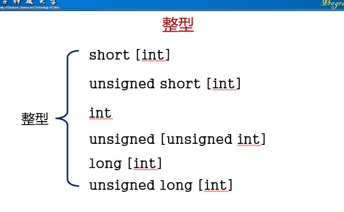

7.基本数据类型
7.1.整型
short表示长度也就是大小比较小的数字，long则相反，signed表示有符号(正负号)的数字，unsigned表示无符号数字，数字默认是有符号的


7.2.浮点型

float用于精度没那么高的数，double 用于精度更高的数，long double 用于精度更高的数，但没那么常用。单精度32位，双精度(double)64位，浮点数以科学计数法存储，每一个数都由符号，指数和小数三部分组成，符号占一个比特，指数部分占8个比特，小数部位占23位，当要用到小数时，要确定小数的精度，如果想要精度更高的话，则需在声明变量时用doubl 变量名 的格式
浮点型常量
小数形式；必须有小数点，如3.14 -12.5等
指数形式：数字 e(E) 指数部分 如3.14e-3 2.57e8 等
浮点型常量通常以double类型存放，如果想以单精度存放，则在数字后加F或f，如果想以long double 类型存放，则在数字后加L或l

7.3.字符型
用char声明变量，赋值时要给值加上单引号，当计算机中出现字符时，C语言只是使用它对应的整数值
char的类型：signed char 有符号的char 表示范围-128~127;unsigned char 表示范围0~255
a.转义序列
分为两种，一种是字符转义，就是平常用的\n \a(响铃) 这种，但它的局限性在于它并没有把所有不可打印的字符涵盖进去

另一种是数字转义序列,可以涵盖所有的不可打印的字符
b.读写字符
scanf

注意，scanf函数读取字符时不会跳过空白字符

getchar和putchar
注意两个单独，putchar输出单独一个字符，getchar读取单独一个字符，且getchar读取时不会跳过空白
一些运用：getchar可以直接用于控制循环的表达式中，如遇到空格时循环终止，则代码可以是while(getchar()!='');getchar也可用于在循环中搜寻字符，也可用于跳过不确定数量的相同字符或空格
7.4.类型转换
a.隐式转换

算术转换：常用算术转换常用于二元运算符的操作数上；
转换规则：较低级转向较高级，即所谓的提升；
若任一数据类型是浮点型，则把数据类型都转换为数据中存在的最高精度的浮点型；float< double< long double
若所有数据类型均不为浮点数，则把所有的数据类型转换为数据中存在的最高精度整数类型；int< unsigned int< long int< unsigned long int
赋值中的类型转换规则：把赋值运算符右侧表达式的值转换为左侧变量的类型
注意：浮点数赋值给整型变量会去掉该数的小数部分；若表达式的值超出了变量类型的范围，则会得到预期以外的结果；如果将一个浮点常量赋值给一个float变量，最好在改常量后加一个后缀f
b.强制类型转换
表示类型：(类型)变量或(类型)(表达式)
7.5.类型定义
类型定义用于对另一个数据类型创建一个别名
语法规则：typedef type declaration; type就是int float 等，declaration就是别名，自己取的
注意：一个类型定义声明并没有创建一个新的类型，仅仅是对某个已有的类型增加一个新名称而已
类型定义可以使代码更容易理解，当对数据类型定义后，在后面的代码中就可以使用别名来代替数据类型，如创建两个变量表示身高，一般用法 float a，b； 但当我们 typedef float height; 之后，我们就可以这样 height a,b; 效果一样，但比前面的那种更好理解； 类型定义还可以使修改数据的类型更加容易，如我们先 typedef int number; 这时的number是int，但当int的位数不够时，我们则需要修改数据类型，就可以直接把int 改成更高精度的int，如 unsigned int , long int
7.6.sizeof运算符
sizeof是取数据类型、常量、变量或者表达式值的存储长度的运算符(以字节为单位)； 语法规则：sizeof(数据类型说明符/表达式)；如sizeof(int),sizeof(i+j)
8.数组
8.1.一维数组
数组是含有多个数据值的数据结构，每个数据值具有相同的数据类型；这些数据值被称为元素；数组内可以根据元素所处的位置对其进行单独访问；简而言之，数组是相同性质的一组数据的组合，数组元素的数据类型相同，个数确定.
声明一个数组：类型定义符 数组名[常量表达式]，常量表达式是数组元素的个数,元素索引从0开始
8.2.数组的初始化
数组可在声明时赋值，获得一个初始值，格式为 数据类型定义 arr[数组元素个数]{数组元素，用逗号隔开}，若赋的数组元素少于[]中的数量，则少的数字默认为0
指定初始化式：一个数组里面只有几个数要赋值，其他都为0，则可采用指定初始化赋值，格式为 数据类型定义 arr[数组元素个数]{[n]=元素，[i]=元素，[j]=元素，...}，表示数组内的第n+1，i+1.j+1个元素自己定义，其他全为0
小技巧：用数组的大小除以数组元素的大小可以得到数组的长度 sizeof(a) / sizeof(a[0]) sizeof是获取数组的字节总数，用字节总数除单个元素的字节长度，即可得到数组的长度，这个经常用到。但sizeof返回的是无符号整型，无符号整型和有符号整型比较是很危险的，所以我们要将 sizeof(a) / sizeof(a[0]) 强制转换为有符号整数，格式为 (int)(sizeof(a) / sizeof(a[0]))
8.3.二维数组
二维数组按照行主序存储数组，从第0行开始顺序存储，接着第一行，如此下去
8.4.字符数组

注意：用字符串常量初始化时，自动加结束标志\0
字符数组的输入输出
二维字符数组，和二维数组用法规则一样
一些相关知识


注意：字符串拷贝函数会将数组二的内容替换数组一的内容,空字符为'\0'

9.函数
9.1.函数的定义和调用
9.1.1函数构造

格式
每个形式参数需要说明其类型；形式参数间用逗号进行分隔。 如果函数没有形式参数，那么在圆括号内应该出现void，或者什么都不写
函数体内声明的变量专属于此函数，其他函数不能对这些变量进行检查或修改。
9.2.2函数调用

Tips：1.如果函数有参数，那么调用时实际参数前不能加类型 2.调用时函数前也不能加返回类型
9.2.函数声明和实际参数
9.2.1.函数声明
当函数构造在函数调用之后时，编译器第一次遇到函数调用时，会自动给函数一个隐式声明，定义函数的数据类型，当后面遇到函数构造时则会报错，所以函数构造要在函数调用之前，但这不现实，所以因此有了函数声明，它可以让编译器先对函数有个初步的了解，当后面遇到函数构造时才不会报错
格式：返回类型 函数名 ( 形式参数 ) ;
9.2.2.实际参数
函数在被调用时要给出实际参数，实际参数将值复制给形参，自身的值不会受到函数内部的影响
9.2.2.1.实际参数的转换
9.2.2.2.数组型实际参数
1.数组可以作为函数的参数，当形式参数是一维数组时，可以不说明数组的长度 2.在把数组名传递给函数时，不要在数组名的后边放置方括号 3.改变数组形参就能改变数组实参 4.如果形式参数是多维数组，则只有第一维的长度可以省略
9.3.函数返回和程序终止
9.3.1.函数返回
函数在完成的时候，需要返回到调用它的地方，这时需要用到return语句
格式如下：return [表达式];
tips：1.表达式是可选的，只有非void返回类型的函数必须有，否则就不应该有。2.如果表达式的类型和函数的返回类型不匹配，那么系统将会把表达式的类型隐式转换成返回类型；3.在void返回类型的函数中，如果return语句是最后一条，那么这条return语句是可以忽略的
9.3.2.程序终止
在main函数中执行return会终止程序
exit函数

9.4.函数递归
在特殊的场合，一个函数可以自己调用自己，那么此函数就是递归的，如计算某个数的阶乘，或某种行为多次重复运用
10.程序结构和变量作用域
10.1.局部变量
在函数体内声明的变量称为该函数的局部变量
局部变量的作用域是从变量声明的点开始一直到所在函数体的末尾。
10.1.1.静态局部变量
在局部变量声明中放置单词 static可以使变量具有静态存储期限 。拥有静态储存期限的变量可以拥有永久的存储单位，所以在整个程序执行期间都会保留变量的值，静态局部变量仍然具有块作用域特性，所以它对于其他函数是不可见的
10.1.2.形式参数
形式参数拥有和局部变量一样的性质：自动存储期限和块作用域，每次调用函数时，对形式参数自动进行初始化(通过赋值获得相应的实际参数的值)
10.2.外部变量
外部变量是声明在任何函数体外的，也被叫做全局变量，可以被所有函数访问，拥有静态存储期限和文件作用域(变量的可见范围从变量被声明的点开始一直到所在文件的末尾)
栈：可以存储具有相同数据类型的多个数据项(与数组相似)
对栈的操作：压栈(push)：在栈顶加入一个数据项；出栈(pop):从栈顶删除一个数据项
对栈里的数据项进行处理时只能处理栈顶的数据项，不能处理其他位置的数据项，且处理时要将栈顶的数据项读取出来处理，不能在栈里处理
外部变量的利与弊：在多个函数必须共享一个变量时，或少数几个函数需要共享大量变量时，采用外部变量十分方便，然而在多数情况下，在函数间通过形式参数进行通信比通过共享变量的方法更好，且在函数中运用外部变量时最好运用目的相同
10.3.程序块
{statements}，在花括号里的复合语句，我们称之为代码块，函数体就是一个程序块
10.4.作用域
在程序块内可以修改外部变量，但在程序块结束时，外部变量的值会重新恢复到以前的含义
10.5.构建C程序
注释的注意事项

11.指针
11.1.指针的基本概念
背景知识

每个字节有唯一的地址，程序中的每个变量占有一个或多个字节内存，将第一个字节的地址称为变量的地址
我们可以用一种特殊的指针变量来存储内存地址，当采用指针变量 p来存储变量i的地址时，我们通常说 p“指向” i。指针变量就是存贮地址的特俗变量
当声明一个指针变量时，变量名前必须加*；声明的指针变量p指向一个对象(是对象而不是变量，因为p可以指向不属于变量的内存区域)
11.1.1.取址运算符和间接寻址运算符
注意使用指针变量前一定要对其初始化，也就是赋值
若指针变量指向了某个对象，可以使用*访问存储在该对象中的内容，如int i,*p;p=&i;此时，*p就与i等价，改变*p的值，同时也会改变i的值
注：不能将间接寻址运算符运用于未初始化的变量
11.2.指针用做函数参数与返回值
指针用作参数用途1：帮助输出函数运行结果；原理：指针所指向的对象的值可以在函数中被修改
用途2：传入指针而非变量提高传参效率，使用const关键字确保函数不会修改指针参数所指向的对象
指针也可作为返回值:可以是作为实参传入的指针，可以是指向外部变量的指针，也可以是指向声明为static的局部变量的指针：但不可以是指向自动局部变量的指针，因为函数返回时此类变量不复存在
指针可以指向数组元素：设a为数组，则&a[i]为指向数组a中元素i的指针
11.3.指针的算数运算
c语言支持三种类型的指针算术运算：指针加上整数；指针减去整数；两个指针相减
注：不能对一个并未指向数组元素的指针执行算术运算：不能当两个指针并非指向同一数组中的元素时，对其执行减法操作
指针可以采用关系运算符和判等运算符进行比较，只有两个指针指向同一数组（中的元素）时，指针比较才有意义
11.4.指针用于数组处理
可用于遍历数组并对数组的元素进行某种操作，因为指针既可访问数组元素的地址，用来防止越界，又可修改数组元素
*和++通常结合使用
11.5.用数组名作为指针
允许使用数组名作为指向数组第一个元素的指针，如int a[10] *a=1;,表示a[0]=1：尽管数组名可以用作指针，但绝不能对其赋值，可以先将数组名赋给其他指针，再对该指针进行赋值
对于形参而言，声明为数组等同于声明为指针
保护数组型实参，在形参声明时加上const关键字
向函数传递数组所需的时间与数组的大小无关
指针也可用作数组名
11.5.指针于多维数组
当我们给二维数组循环赋值时，通常采用两个循环，一个循环列，一个循环行，但当我们把二维数组赋值给指针p时，我们只需要让p自增，并且p < =&a[i][j],就可以了，可以看作把二维数组当作一维数组来处理的
为了访问二维数组a中的第i行元素，可以采用如下方式初始化指针p，使之指向数组a中第i行的第0哥元素:p=&a[i][],或者可以简单的写为p=a[i];
由于a[i]是指向数组a中第i行元素的指针，因此可以将其作为参数传递给一个接受一维数组作为形参的函数，换言之，以一维数组为形参的函数，同样可以接受二维数组中的一行作为参数传入
11.6.指针实际应用
如果函数里要修改函数外的量，这时可以用指针，可以单独声明一个指针变量，然后将要修改的变量的地址指向该指针，也可以在调用函数时，实参用 &变量名 效果一样
指针的运算：int *p=&a[1],*q=&a[2];*(p+3)表示a[1]后面的第三个元素，q-p表示a[2]和a[1]之间的元素个数
在for循环里，指向同一个数组的指针只能在判断和处理条件中出现一次,如下便是错误的使用，因为前面判等的条件用了a[n]的地址，但后面的a++使a[n]的地址也加一，这将会使循环永远不停止，正确做法应如下二图，先在循环外把a[n]的地址赋给一个指针，判等时用这个指针来判等
12.字符串
12.1.字符串字面量
字符串之间可以包含转义序列，当一行字符串太长时，可以在其中加入\把两行字符连成一行
当编译器遇到一个长度为n的字符串字面量时，会给它分配n+1个字节的存储空间，额外的一个是空字符，用来表示字符串的结束
可以在任何c语言允许使用char*指针的地方使用字符串字面量，如char*p;p="abc"，这个操作不是把值赋值给p而是使p指向字符串中第一个字符的地址，因为c语言把字符串当作数组处理
c语言允许对指针添加下标，因此可以给字符串字面量添加下标，使指向字符串中某个字符
字符串字面量是常量，不可修改或赋值操作
字符常量和字符串字面量的区别：前者是用单引号，后者用双引号，前者是以对应的ASCⅡ数字表示的，后者是以指针表示的，且结尾还会多一个空字符
12.2.字符串变量
任何一维数组均可以用于存储字符串，此时可以把该数组看作一个字符串变量
初始化字符串变量时(即声明一个数组并赋值)，可以不说明数组的长度，数组可以根据后面数组的长度自动调整长度
字符数组与字符指针的区别：两者均可以看作一个字符串：数组版中，存储的字符是可以修改的，指针版中，存储的字符串字面量是不可以修改的：在把指针作为字符串之前，指针必须指向一个字符数组
12.3.读写字符串
如果只想显示字符串的一部分，可以使用转换说明%.ps，这里的p是要显示的字符数量
写字符串可以用printf或puts，printf函数可以用%S转换说明符来写一个字符串；可以使用转换说明符%.ps来输出字符串的一部分，p表示要显示的字符的个数；可以使用说明转换符%ms将显示字符串子啊m个字符宽度的输出域，如果字符串少于m个字符，字符串将在域内右对齐，在m的前面放置一个-号，可以强制字符串左对齐；puts函数会写一个额外的新换行符
读字符串：可以用scanf或者gets一步读入单个字符串，另一种方法：一次读入一个字符；在用scanf读字符时，后面为变量赋值不用&，因为后面的变量是个指针；scanf可以用%ns，表示能够存放的最多字符数当调用 scanf时，该函数跳过空白，然后读入字符并存入str指向的空间，直至遇到一个空白字符，且会存放一个空字符在字符串的后面
scanf并不总能读一整行输入，换行符，空白和tab符，均导致scanf停止读取，要读取整行输入，可以使用gets函数
gets函数的特点：读取输入不会跳过开始的空白；直到找到换行符才停止读入；不存储换行符，而用空字符代替，gets本身是不安全的，fgets是一个更好的选择
12.4.使用C字符串库
数组不能用运算符进行拷贝和比较，比如用=赋值
赋值(拷贝)函数：函数原型：char*strcpy(char*s1,const char*s2),作用strcpy拷贝字符串s2到s1，准确的说是strcpy拷贝s2指向的字符串到s1指向的字符数组，该函数返回s1(指向目的字符串的指针)；因为该函数不知道s1和s2的大小，所以有可能s2的长度大于s1，所以，此函数是不安全的；为此，我们可以用strncpy，它需要第三个参数来限制拷贝的字符的个数 strncpy(str1,str2,sizeof(str1)),如果str2的长度大于或等于str1数组的长度，strncpy将保持拷贝的结果而不能给str1增加一个字符串结束符
数组测长度函数：函数原型 size_t strlen(const char*s),它返回字符数组的长度，不包括空字符
字符串追加函数：函数原型：char*strcat(char*s1,const char*s2),它的作用是追加字符串s2的内容到字符串s1的末尾，返回s1(指向结果字符串的指针)，但它也有strcpy的风险，为此我们可以采用strncat，它也需要第三个参数来限制要拷贝的字符数。调用方法为 strncat(str1,str2,sizeof(str1)-strlen(str1)-1),它会以一个空字符结束str1
比较函数：函数原型为，int strcmp(const char*s1,const char*s2)。strcmp比较字符串s1和s2，根据s1是小于，等于或者大于s2来返回一个小于，等于或者大于0的值
12.5.字符串数组
字符串数组就是将多个字符串用数组来存储管理，存储方法有很多，一种方法是采用二维数组，每行一个字符串，但每行会存在一定的空白，第二种方法是采用指针数组的方式，指针数组设为一维数组，每个元素都是一个字符串，此时，如果要调整字符串的次序，我们一般通过改变索引来改变次序
12.6..命令行参数
当我们在运行一个程序时，我们通常要给它传传入一些信息，命令行信息机制并不仅限于操作系统命令，任何程序都可以采用这种方式获得信息，要在我们c程序的开始就给它传入信息，方法为使用带参数的main函数
main一般带两个参数，这两个参数通常命名为argc和argv，main(int argc,char*argv[])，argc是命令行参数的数量(包括程序名本身)，argv是指向命令行参数的指针数组，这些命令行参数以字符串的形式存储。argv[0]指向程序名，而从argv[1]到argv[arvc-1]则指向余下的命令行参数
13.预处理
13.1.基本概念和条件编译
预处理是指在编译之前对源程序所做的处理，执行预处理工作的程序叫预处理，在早期，预处理器和编译器是分开的，现代编译器一般集成了预处理器，预处理命令也称为指示，它指示编译器如何翻译源程序
指令以井号开头，是给编译器的命令，告诉编译器如如何翻译我们的程序；语句以分号结尾，被编译器翻译为二进制程序。
文件包含：#include <文件名>，用于c语言自身库的头文件，编译器搜索系统头文件所在的目录；#include "文件名"
条件编译：#if、#ifdef、#ifndef、#elif、#else、#endif指令能根据预处理器可以测试的条件来确定，是将一段文本块包含到程序中，还是将其排除在程序之外
指令总是在第一个换行符处结束，除非明确地指明要延续。如果想在下一行延续指令，我们必须在当前行的末尾使用\，指令可以出现在程序中的任何地方，注释可以与指令放在同一行
13.1.1.宏
简单的宏：宏的替换列表可以包括标识符，关键字，数值常量，字符常量，字面串，运算符和标点符号。当预处理器遇到一个宏定义时，会做一个“标识符”代表“替换列表”的记录。在文件后面的内容当中，不管标识符在那里出现，预处理器都会用替换列表代替它；不要在宏的定义中放额外的符号，不用放等号；
宏的作用：程序会更易读；程序会更易于修改；可以帮助避免前后不一致或键盘输入错误；可以对c语法做小的修改，就是说给C语言符号添加别名，从而改变c的语法，比如 #define BEGIN { ；对类型重命名；控制条件编译；以上作用中，宏定义中的替换列表为空是合法的
带参数的宏：格式为 #define 标识符(x1,x2,x3,x4,...)替换列表 ,其中，标识符和替换列表之间直接相连，不能有空格